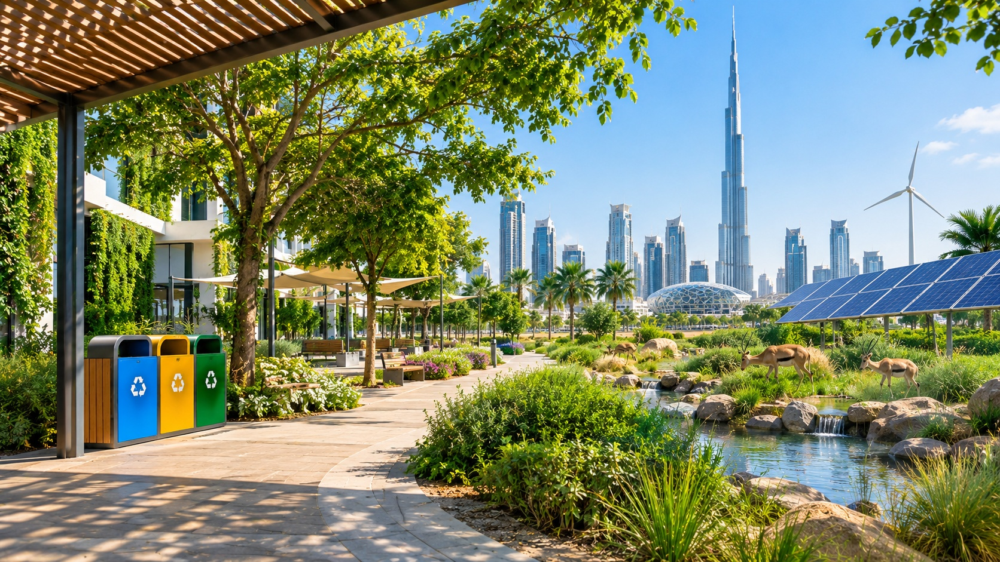

Six challenges, their impacts, evidence and practical solutions for a more sustainable Dubai.
☁
TOPIC 01
Carbon emissions
The problem
Burning fossil fuels for transport and electricity releases greenhouse gases.
Why it matters
Heat-trapping emissions contribute to warming and increase cooling demand.
Supporting fact
Human activity has unequivocally caused global warming.
[1]
What you can do
Use the Metro, combine trips, switch off unused equipment and choose efficient appliances.
💧
TOPIC 02
Water conservation
The problem
Dubai’s dry climate makes reliable freshwater supply resource-intensive.
Why it matters
Wasted water increases treatment, pumping and desalination needs.
Supporting fact
Dubai’s demand-side strategy includes water and electricity savings targets.
[4]
What you can do
Repair leaks, take shorter showers, use full laundry loads and water plants efficiently.
☀
TOPIC 03
Renewable energy
The problem
Dependence on fossil energy creates emissions.
Why it matters
Cleaner electricity can reduce emissions from buildings and daily activities.
Supporting fact
DEWA’s Mohammed bin Rashid Al Maktoum Solar Park is a major clean-energy project.
[3]
What you can do
Choose efficient equipment and explore approved rooftop solar options with building management.
♻
TOPIC 04
Waste and recycling
The problem
Disposable products and mixed waste make material recovery difficult.
Why it matters
Waste consumes resources and can pollute ecosystems.
Supporting fact
Dubai’s waste strategy promotes recycling and innovation in waste management.
[5]
What you can do
Reduce purchases, reuse containers, sort accepted recyclables and follow local collection rules.
🌿
TOPIC 05
Biodiversity
The problem
Development and pollution can fragment habitats.
Why it matters
Loss of native species weakens ecosystems and their resilience.
Supporting fact
Dubai Municipality has responsibilities for environmental protection and biodiversity.
[4]
What you can do
Protect native habitats, avoid litter, plant suitable native species and respect wildlife.
🌡
TOPIC 06
Climate change
The problem
Greenhouse gases alter the climate system.
Why it matters
Extreme heat threatens health, infrastructure and outdoor comfort.
Supporting fact
Global surface temperature was about 1.1°C above 1850–1900 during 2011–2020.
[1]
What you can do
Reduce energy use, support clean transport and prepare for extreme heat.
Small changes. Lasting impact.
Imagine a Greener Environment
Explore how sustainable environmental practices can
transform Dubai's natural environment. This comparison
illustrates two possible environmental scenarios.

Environmental ImpactGreener Future
↔
Environmental Challenges
High carbon emissions · Excessive water consumption
· Fossil fuel dependency · Waste accumulation
· Biodiversity loss · Rising temperatures
A Greener Environment
Reduced emissions · Water conservation
· Renewable energy · Recycling
· Protected biodiversity · Climate resilience
By adopting renewable energy, conserving water, reducing
waste and protecting natural habitats, Dubai can reduce
its environmental impact and support a healthier planet
for future generations.